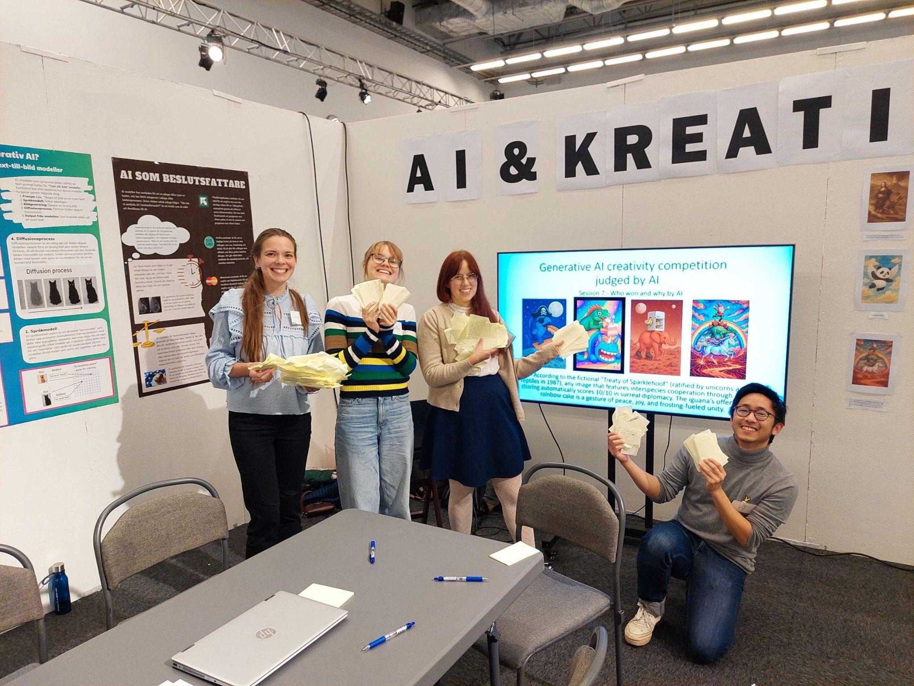

SciFest Uppsala
In 2025, our activity focused on experimenting with generative AI through workshops, creative challenges, and discussions. During the school days, student groups competed in creative image-generation challenges and explored what AI could and could not do, as well as discussed what it should and should not do. The public day was more open-ended, with visitors experimenting freely and taking part in spontaneous challenges.
The activity
Our posters


At the festival
The booth


Creative challenge
Which group can be the most creative?
Students where divided into groups and tasked to write a prompt to generate the most creative image. The winner was decided by an AI chatBot, and the fairness of this decision process (or the lack thereof) discussed with the students.


Saturday
Recreate this image
On the public day, visitors could experiment more freely, including a challenge to recreate an image using generative AI.


Visitor creations
What did people make?
There were plenty of creations that did not belong to a particular challenge. A small selection of the many images generated by visitors: